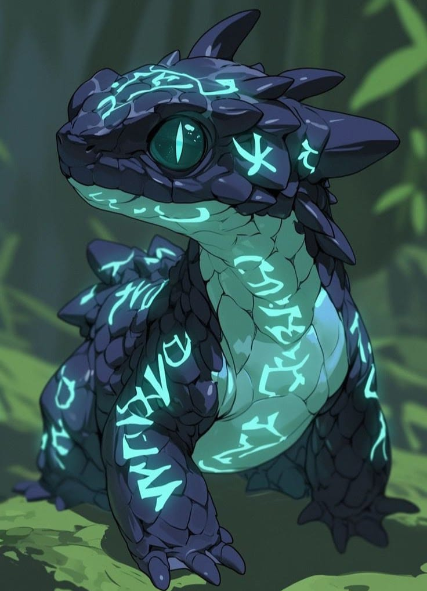

Tazer-Craft

Identidade
- Interpretado: Mestre
- Idade: 2 meses
- Altura: 2 Cm
- Antecedência: Experimento
- Associação: Manuel
- Hobbs: Ler, Explorar
- Personalidade: Curioso, Destemido, Sociavel
Historia
de um ovo que passou por experimentos arcanos nasce um pequeno lagarto com runas em suas costas, vendo os "cientistas" na sua frente, inconscientemente, usou seus poderes elétricos e saiu correndo, saindo em uma especie de masmorra se perguntou "que lugar e esse?", explorando o lugar, chegou num local repleto de livros e anotações, as lendo, descobriu q fazia parte de um experimento para dar habilidades magicas para fortificar e tornar possível a manipulação sem limites da magia, "aparentemente, sou 1007" pensou o lagarto apos ver anotações inacabadas sobre um ovo de lagarto, "bom...acho que vou ver o que posso achar" saindo do local e explorando, ouviu sons de espadas e gritos de dor, ao se aproximar viu pessoas lutando contra um ser enorme, intrigado, decidiu observar, depois do embate, ele viu os seres se aproximar, ficou com medo, mais sentiu uma aura diferente no elfo a sua frente, então decidiu ser amigável, sentindo que conseguiu um amigo, decidiu segui-lo.Aparencia
Uma criatura pequena e dracônica, com corpo robusto e coberto por escamas escuras azul-violáceas, bem definidas e de aspecto resistente, tamanho de um camaleão, ideal como companheiro mágico.
Olhos: Grandes, de um verde vibrante e brilhante, com pupilas verticais que lembram as de um réptil ou felino.
Marcas luminosas: Todo o seu corpo é coberto por runas místicas que brilham com uma luz ciano intensa
Status e aptidões
-
Vida [24]
-
Defesa [18]
-
Força [-1]
-
Destreza [+8]
-
Constituição [+2]
-
Inteligencia [+3]
-
Sabedoria [+3]
-
Carisma [+2]
Ataques
| Ataque | Descrição |
|---|---|
|
Campo Eletrico |
O Tazer-Craft sobrecarrega seu corpo fazendo uma area eletrica onde todos que estão em volta dele Receberão Dano: 3d6 e caso seja um ser vivo ele tera que fazer um teste de Contituição e se falhar ele ficara paralisado por 1 rodada, DT: 18 |